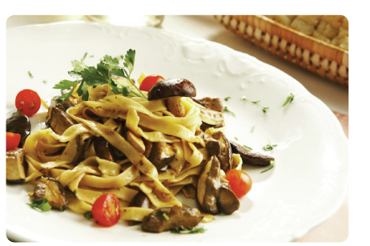

Fettuccini with Mushrooms, Tomatoes & Parsley
Ingredients
1 package (12 ounces) fettuccine
1 pound fresh mushrooms, halved
1/4 cup Tailai USA Chopped Onion
1 large green pepper, chopped
2 teaspoons Tailai USA Minced Garlic
1 teaspoon olive oil
3 tablespoons all-purpose flour
3 cups 1% milk
1 teaspoon salt
1/4 teaspoon pepper
1/2 cup sun-dried tomatoes (not packed in oil), thinly sliced
1 cup (4 ounces) shredded reduced-fat Swiss cheese
1/4 cup grated Parmesan cheese
2 tablespoons fresh chopped parsley
Instructions
Cook fettuccine according to package directions. Meanwhile, in a large nonstick skillet, saute the mushrooms, onion, green pepper and garlic in oil for 4-6 minutes or until vegetables are tender. In a small bowl, combine the flour, milk, salt and pepper until smooth; gradually stir into mushroom mixture. Add tomatoes. Bring to a boil; cook and stir for 2 minutes or until thickened. Stir in cheeses. Drain fettuccine; toss with sauce and garnish with fresh chopped parsley.
Makes 6 servings.